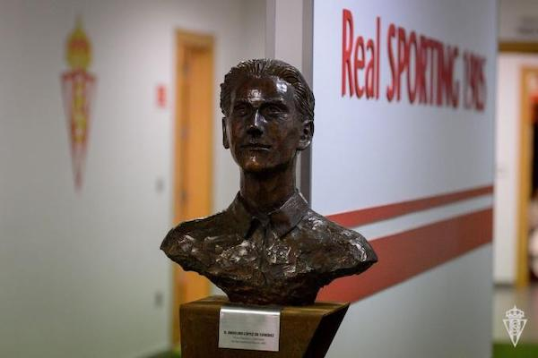
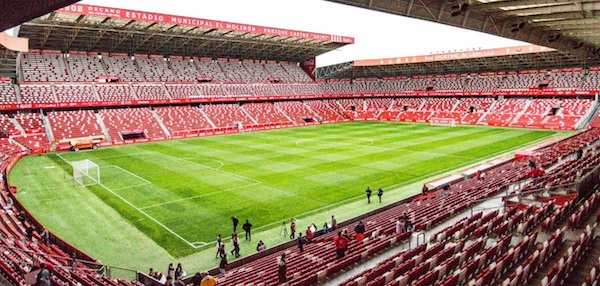
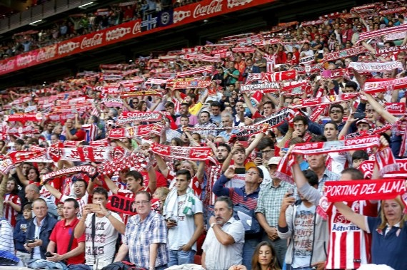

Real Sporting de Gijón
Información
El Real Sporting de Gijón, S. A. D., más conocido como Sporting de Gijón o simplemente Sporting, es un club de fútbol profesional español del municipio de Gijón, Asturias. Fue fundado en agosto de 1905 y compite en la Segunda División de España.
La historia del Real Sporting comienza en agosto de 1905, cuando un joven de catorce años de edad llamado Anselmo López funda un equipo al que llama Sporting Club Gijonés, como expresión primigenia de un deporte traído a la ciudad, probablemente, por marineros de buques extranjeros recalados en el puerto de El Musel.
Estadio
El Estadio El Molinón, oficialmente denominado Estadio Municipal El Molinón-Enrique Castro «Quini», es un recinto deportivo de titularidad municipal situado en la ciudad de Gijón, Asturias, España. Alberga los partidos que disputa como local el Real Sporting de Gijón y tiene una capacidad para 30.000 espectadores.
Su nombre hace referencia a un gran molino hidráulico que se erigía en las inmediaciones de su localización. Es conocido como El Templo y considerado el estadio más antiguo de España en activo. Recibió el nuevo nombre de Estadio Municipal El Molinón-Enrique Castro «Quini» a raíz de la muerte del emblemático jugador Enrique Castro Quini.
Equipación
El uniforme oficial actual del equipo consta de camiseta a rayas verticales rojas y blancas, representando los colores de la bandera de Gijón, pantalones azules y medias azules con detalles rojiblancos.
La camiseta ha permanecido invariable a lo largo de la centenaria historia del club, por lo que es el equipo profesional español que más años lleva vistiendo camiseta rojiblanca; sin embargo, el resto de elementos de la equipación han ido sufriendo diferentes modificaciones (pantalones blancos, negros o azules; medias blancas con vueltas rojas, azules con vueltas rojiblancas, rojas con tres bandas finas blancas en la vuelta y rojiblancas a franjas, así como negras con vueltas rojiblancas).
El segundo y tercer uniforme también han ido cambiando a lo largo de la historia: blanco, azul, rojo, negro, verde o amarillo.Durante los años han sido diferentes marcas las que han llevado a cabo la fabricación de esta equipación. Algunas de las marcas son Adidas, Nike, Lotto o Astore entre otras.
Afición
La afición del Sporting es reconocida, nacional e internacionalmente, como una de las más animosas y viajeras de España. Los desplazamientos reúnen a miles de seguidores, tanto en Segunda como en Primera División, en un movimiento popular conocido como La Mareona. La cantidad de abonados que tiene el Sporting supera la cifra de 18.500 aficionados, superando así la mitad de la capacidad del estadio.
